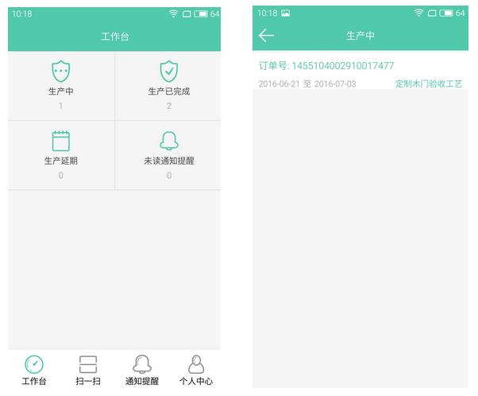
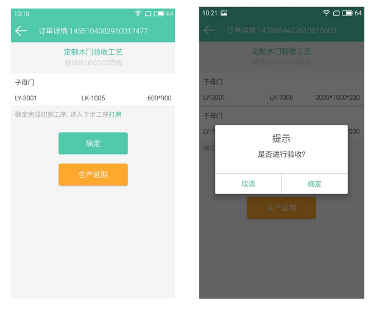
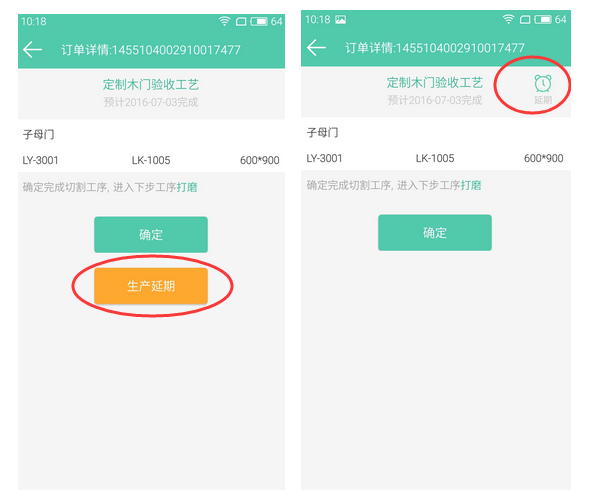

生产派单
当订单所有审批均已完成，此时订单可派发至工厂进行生产，即运营专员可进行生产派单了。
操作
第1步：搜索查看订单
拥有【运营专员】角色的账号登入系统后，点击左侧菜单栏订单管理>>订单列表，查看需要进行派单的订单。
搜索条件支持按照订单编号、订单状态、顾客姓名、销售顾问姓名、下单时间进行搜索。

第2步：生产派单
可进行派单后，系统会发送通知提醒给【运营专员】角色的账号。在订单列表，可进行生产派单的订单状态为“等待生产派单”，点击列表右侧操作栏的订单详情图标，进入订单详情页面进行派单。

第3步：选择生产工厂与验收工艺
查看订单详情信息，确认无误后，进行生产派单，点击页面右上角“派单”弹出派单工厂与验收工艺选择界面。
选择此单将进行生产的工厂，选择驻厂代表在工厂生产过程中对此订单进行验收的验收工艺（生产验收步骤），确认无误后，点击“保存”。
